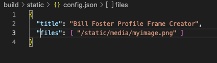

This is a guide on how to customize Profile Frame Creator for your page.
Using any text editor open /buiid/static/config.json
Remove the REMOVETHIS texts so that the config file looks like the above image
Change the title for your needs
In files add the path to the frames you want to use.
Create your own frames and copy them into /build/static/media (Or where ever you specified in the config file)
Follow the instructions in howto.html to install.